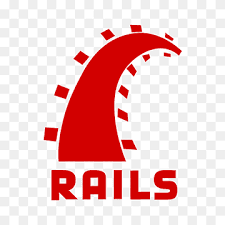

John Coote
Hi, I'm John Coote. I am a Senior Backend Engineer and have been working with Ruby professionally since 2018, on Rails, on Sinatra and on and AWS Serverless.
I have worked in Fintech, Healthcare and Logistics. Before moving into software development, I was an Electrical Engineer.
I enjoy writing code that is performant and thouroughly tested.
I am a strong believer in writing code that is easy to understand. Refactoring, bugfixing and generally maintainability are all better if the code is clear
I love mentoring others, I think I'm pretty good at it. I enjoy lifting the performance, competency and confidence of the team I am working in, just as much as I take pride in my own individual achievemnts.
Professional Experience
Click to expand each section...
-
peopleSherpa: Senior Backend Engineer, July 2022 - June 2024

Sherpa
Sherpa provides last mile delivery services utilising a pool of drivers who can select jobs from the app on their own device.
I was the Senior Software Engineer for a squad comprising other Ruby on Rails engineers, mobile developers, QA testers and Product Manager. I provided mentoring to the junior enginers, worked with the product manager to translate business requirements into achievable pieces of work and with the wider technical group to deliver well crafted production ready code.
Sherpa operates a Ruby on Rails Monolith serving iOS and Android driver apps via API, ingesting customer orders by API, both directly and through middleware such as Shippit
- Ruby: 3.3, Rails: 7.1, Postgres
- Leadership: 2 x software engineers as direct reports, general team leadership requirements for the squad of 1 x Product Manager, 1 x QA tester,
- API controllers and serialization: Grape
- Internal administration: Active Admin
- Customer facing website views: ERB, Slim, Phlex, jQuery
- Async tasks: Sidekiq, Sidekiq Cron
- State Management: Acts As State Machine (AASM)
- Service Objects for consistent actions regardless of entry point
- Feature Toggling: Flipper
- Bug Tracking: Bugsnag
- Infrastructure: GCP
- Repo Hosting and CI/CD: Github
- Testing: RSpec
- Code Formatting: Rubocop
Some Significant Projects Included:
-
Blocks
A block represents a unit of time that a driver can pre-book themselves to work. This was a new concept for Sherpa, who had hitherto relied on drivers choosing only deliveries, or collections of deliveries. The importance of this project was that it provides better confidence; to drivers that they would be sure of work on a specific future date, and for customers that they would have drivers available when they needed. We replaced a 3rd party booking system, bringing all the necessary features in-house as well as new improvements.
I lead this project, coordinating the efforts of the squad to specify, create, test and deploy this new feature. At the specification point, I worked most closely with the Product Manager and the Driver Operations staff to learn how the 3rd party system worked, and how we would replicate / improve that with an internal tool. During the execution phase I coordinated the work being carried by myself, 2 other backend engineers and the 2 mobile developers, and as work continued I managed the testing / remediation / retesting cycle with our QA team. As work was deployed I monitored all of the bug tracking tools, and coordinated with the CTO for when features could be turned on with Flipper.
The project was a success, with better delivery statistics and less contact time between operations staff and drivers on two of the biggest days in the logistics calendar - Valentine's Day and Mother's Day
-
Secure Handover
In order to onboard a specific client with a high value delivery, I lead the feature whereby a recipient would have to provide a code number to the driver before the goods could be handed over.
I lead the implementation, coordinating the efforts of back end engineers, mobile engineers and QA testers.
-
Decoupling of User and Courier Deliver By Time
The Sherpa platform had been built with only one Deliver By Time, that being, the one that Sherpa commited to the customer. Often this was OK, but under the circumstance where a delivery could not be assigned to a driver quickly enough, then it didn't make sense to judge the driver by that time.
I lead the implementation, doing the bulk of the code changes myself, as well as some coordination of the work of the2 other back end engineers and the QA testers.
-
peopleMable: August 2021 - June 2022


Mable
Mable are a 2 sided marketplace, connecting individuals with care needs (mostly NDIS or ACAT funded), with individual service providers. I was one of approx 40 Engineers working in Sydney, around Australia and also around the world.
The platform is a Rails Back End monolith serving an Angular Front End
- Ruby, Rails, Postgres
- Leadership: Provided mentoring to two junior engineers
- GraphQL: queries and mutations
- Infrastructure: GCP
- Repo Hosting and CI/CD: Github
- Testing: RSpec
- Code Formatting: Rubocop
-
peopleFat Zebra: November 2018 - July 2021


Fat Zebra
Fat Zebra is a payment services provider, working with banks, acquirers, card providers and merchants. I was one of approx 15 Engineers working mostly in Sydney.
The platform is a collection of Rails monoliths (plus one Sinatra application) as well as several AWS Microservice applications. The principal task is to provide a fast response for a payment request
- Ruby, Rails, Sinatra, Postgres, AWS [Lambda, S3, SQS, Step Functions, SSM]
- Leadership: None. This was my first job as a professional developer. I was there to learn, and was so lucky to be surrounded by colleagues who were good at programming _and_ good at lifting the confidence and abilities of junior staff.
- Infrastructure: AWS
- Repo Hosting: Bitbucket
- CI/CD: Buildkite
- Testing: RSpec
- Code Formatting: Rubocop
Personal Projects
Click to expand each section...
-
person_outlineJoin The Dots


Join The Dots
This personal project is an idea I had to collect, aggregate and analyse political donations, the people behind those transactions and any possible ways those people are connected.
It will always be a work in progress. Most recently I have added charting of donations and other transactions using Chartkick
- Ruby: 3.2, Rails: 7, Postgres
- Github Repo
- Live Site
- Hosting: AWS EC2 using Hatchbox for Deployment-as-a-service
- Domain Registration: AWS Route 53
- ETL: Data comes principally from the AEC transparencey register. It's cleaned with various custom scripts, and then imported using a rake task.
- Regex: Mostly at the point of importing of the data, regex are used to determine if a record is a person or a group, if the record represents a political party etc. For people we use regex to identify and remove titles and honorifics.
- Recursion: Crawling from person to connected groups and people, to their connected people and groups.
- Hotwire / Turboframes: Some of those recursive queries can take a long time, Turboframes are used to load slow data asynchronously
- Charting: Chartkick and Chart.JS
- Search: Full Text Search using pg_search
- Views: Phlex
- Testing: RSpec
-
people_outlineWho The Bloody Hell Are They?
Who The Bloody Hell Are They?
A friend had the idea to analyse the demographic data of the candidates for the 2022 Federal Election. The name is a play on the Tourism Australia ad "So where the bloody hell are you?" conceived while Scott Morrison was in charge of that body. We looked at data points such as Gender, Prior Career and Education. Volunteers tracked down the data, others looked after promotion (mostly Twitter). I built the website, with some help on the Front End
- Rails: 7, Ruby: 3.0, Postgres
- Github Repo
- Live Site
- Hosting: AWS EC2 using Hatchbox for Deployment-as-a-service
- Charting: Chartkick and Google Charts
- Search: Full Text Search using pg_search
- Other Interesting Gems: Gender Detector, HTTParty
-
people_outlinePitcher / Catcher
Pitcher / Catcher
This is a pair of apps (in fact there are more catchers (1)) to demonstrate proof of concept for updating data in one app when data in another changes. An ex-colleague had the idea of a central library of technical documents, to which customers could subscribe, and their database (Catcher) would be updated automatically whenever a document was updated on the central library (Pitcher). Fundamentally the catcher subscribes to a webhook, that is sent each time the pitcher updates a document.
(1) I made a few different catcher apps, but basically they're all doing the same thing; accepting a webhook post when data changes on the pitcher. Not all catchers are subscribed to the same documents
- Ruby 3.0, Rails 7.0, Postgres
- Storage: AWS::S3 (with Ruby SDK Client)
- HTTP Client: Faraday
- Background Jobs: Delayed Job (uses Postgres for the queue, with a rake task to poll for jobs in the queue)
- Hotwire: uses Turbo / Broadcast to append or replace the html in the catcher app view when it is updated in the database (using Redis in the background)
- Github Repo (Pitcher) | Live Site (Pitcher)
- Github Repo (Catcher) | Live Site (Catcher)
-
person_outlineRuby on Rails on Raspberry Pi

Ruby on Rails on Raspberry Pi
Some basic sensor and hardware interaction with Ruby on Rails on a Pi.
interactive use, by visiting
/led/onand/led/off, simply turns on or off all outputsautomated, there is a crontab entry that fires a rake task every minute (`/lib/tasks/breadsched.rake`). The rake task reads the value of the temp sensor and sends a request to
/heater/onor/heater/offdepending on the value.webhooks; listens for incoming requests on
/hook/github. I configured the github repo to send a webhook post request for any event on this repo. I used ngrok to allow incoming requests to my server.- Ruby 2.7, Rails 7.0, SQLite3, ngrok
- Raspbian Linux
- Github Repo
- Slide Deck
-
person_outlineSonos Blame

Sonos Blame
Answers the question: Who put that terrible song on the office sonos?, well it does if all team members are signed up to this app...
Login to this app with your spotify login, and it will pull all your listening data. You can then query the app with an artist name, and it will return the user who is the biggest fan of that artist. Obviously not a very serious project, it does offer some interesting insights into your Spotify tastes.
- Ruby: 2.6.4, Rails: 6.0, Postgres, Redis, Sidekiq, OAuth, RSpec, Faker
- Github Repo
- Live Site: Currently offline
-
person_outlineNature Color Schemes


Nature Color Schemes
Some fun with colors; I got the color values from some photos I had taken and had some practice with CSS variables and also trying to make some complementary themes.
- HTML, CSS, Bootstrap
- Github Repo
- Live Site on Github Pages
-
person_outlinedivBow
divBow
Some fun with maths, colors, jQuery and time based animations.
- HTML, CSS, jQuery, CSS Grid
- Github Repo
- Live Site on Github Pages
-
person_outlineRSpec Tutorial / Notes
RSpec Tutorial / Notes
My RSpec notes, which I started when I was a junior, have added to over time, and which I have provided to several junior engineers over the years now